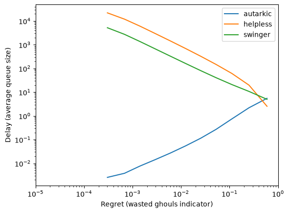
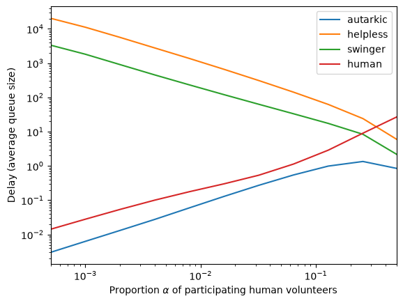

Realist Vampire(s) Seeking Consenting Suicidal Person(s)#
Note
This is the companion notebook to the article Realist Vampire(s) Seeking Consenting Suicidal Person(s) (SAGT 2026, Springer LNCS) and to its extended version (available on HAL and arXiv). It is NOT intended to be self-contained. Please refer to the paper for context and explanations.
Preliminaries#
Basic Blood Types#
First, we define the different blood types. In addition to the \(2^3\) main types depending on the presence of \(A\), \(B\), and \(Rhesus\) markers, we add a void type that will be used later to model non-ghoul humans.
An important property is can_feed, that tells whether a vampire of a given type can feed on a ghoul of another type.
[1]:
import numpy as np
class BloodType:
A = ["", "A"]
B = ["", "B"]
R = ["-", "+"]
def __init__(self, i, j, k):
self.markers = np.array([i, j, k])
self.x = False
def __repr__(self):
if self.x:
return 'X'
i, j, k = self.markers
result = f"{self.A[i]}{self.B[j]}{self.R[k]}"
if len(result) == 1:
return f"O{result}"
else:
return result
@property
def sanitized_name(self):
res = self.__repr__()
return res.replace('-','m').replace('+','p')
def can_feed_on(self, other):
return np.all(other.markers <= self.markers)
@classmethod
def void(cls):
res = cls(1, 1, 1)
res.x = True
return res
Let us compute all possible groups. We’ll store them in a list, a class, and a dict for easy access.
[2]:
class Groups:
pass
groups = [BloodType(i, j, k) for i in range(2) for j in range(2) for k in range(2)]
g = Groups
for t in groups:
setattr(g, t.sanitized_name, t)
groups_ = {str(g): g for g in groups}
groups
[2]:
[O-, O+, B-, B+, A-, A+, AB-, AB+]
Vampire/Ghoul Types#
We now define Vampire/Ghoul types, which are defined by two blood types. The following properties are defined:
autarkic: the vampire can feed on their ghoul.
compatible_with: each vampire of the two pairs can feed on the other pair’s ghoul.
swinger: a non plug-and-drink pair compatible with another non plug-and-drink pair.
helpless: a non plug-and-drink pair that is only compatible with plug-and-drink pairs.
three_compatible: each vampire of three pairs can feed on a distinct available ghoul, in a cyclic fashion.
[3]:
class VGType:
def __init__(self, v, g):
self.v = v
self.g = g
self.compatible_types = []
def __repr__(self):
return f"{self.v}/{self.g}"
@property
def category(self):
if self.auto_compatible:
return "autarkic"
if all(c.auto_compatible for c in self.compatible_types):
return "helpless"
return "swinger"
@property
def auto_compatible(self):
return self.v.can_feed_on(self.g)
def compatible_with(self, other):
return self.v.can_feed_on(other.g) and other.v.can_feed_on(self.g)
def three_cycle(self, other1, other2):
return self.v.can_feed_on(other1.g) and other1.v.can_feed_on(other2.g) and other2.v.can_feed_on(self.g)
def three_compatible_with(self, other1, other2):
return self.three_cycle(other1, other2) or self.three_cycle(other2, other1)
We now prepare all possible VG pairs and observe their distribution.
[4]:
from collections import Counter
vgs = [VGType(v, g) for v in groups for g in groups]
for v1 in vgs:
for v2 in vgs:
if v1.compatible_with(v2):
v1.compatible_types.append(v2)
vgs_ = {str(vg): i for i, vg in enumerate(vgs)}
Counter(vg.category for vg in vgs)
[4]:
Counter({'autarkic': 27, 'helpless': 19, 'swinger': 18})
Human types#
We call human a potential ghoul not yet affiliated to any vampire. Humans can be modelled as a VG pair where the vampire is a placeholder, denoted \(X\), compatible with everyone, e.g. X/O+
[5]:
class Human(VGType):
category = "human"
def __init__(self, g):
self.v = BloodType.void() # alway compatible
self.g = g
[6]:
humans = [Human(g) for g in groups]
humans
[6]:
[X/O-, X/O+, X/B-, X/B+, X/A-, X/A+, X/AB-, X/AB+]
Blood type distribution#
For numeric computation, we need statistics on the blood type probabilities. We leverage Wikipedia to access recent data.
[7]:
import requests
import re
from bs4 import BeautifulSoup as bs
from fake_useragent import UserAgent
ua = UserAgent()
soup = bs(requests.get("https://en.wikipedia.org/wiki/Blood_type_distribution_by_country", headers={'User-Agent': ua.random}).content)
table = soup('table')[1]('tr')
names = [s.text.strip().replace("−", "-") for s in table[0]('th')[2:]]
blood_type_by_country = dict()
for line in table[1:]:
try:
country = line.th.text.strip().split('[')[0]
except AttributeError:
continue
stats = {n: float(s.text.strip()[:-1]) if s.text[0].isdigit() else 0.0 for n, s in zip(names, line('td')[1:])}
total = sum(stats.values())
blood_type_by_country[country] = {k: v/total for k, v in stats.items()}
blood_type_by_country[country]['X'] = 1.0
[8]:
blood_type_by_country['United States']
[8]:
{'O+': 0.374,
'A+': 0.35700000000000004,
'B+': 0.085,
'AB+': 0.034,
'O-': 0.066,
'A-': 0.063,
'B-': 0.015,
'AB-': 0.006,
'X': 1.0}
[9]:
blood_type_by_country['France']
[9]:
{'O+': 0.365,
'A+': 0.382,
'B+': 0.077,
'AB+': 0.025,
'O-': 0.065,
'A-': 0.068,
'B-': 0.013999999999999999,
'AB-': 0.004,
'X': 1.0}
[10]:
blood_type_by_country['World']
[10]:
{'O+': 0.3878396121603878,
'A+': 0.2757297242702757,
'B+': 0.0818099181900818,
'AB+': 0.0201999798000202,
'O-': 0.1323098676901323,
'A-': 0.0818099181900818,
'B-': 0.0201999798000202,
'AB-': 0.00010099989900010099,
'X': 1.0}
Given a list of VG types and a country, issue normalized arrival rates.
[11]:
def arrival_rates(vgs, country="United States"):
probs = blood_type_by_country[country]
res = [probs[str(vg.v)]*probs[str(vg.g)] for vg in vgs ]
total = sum(res)
return [r/total for r in res]
For the record, one can compute the distribution per VG category:
[12]:
from collections import defaultdict
shares = defaultdict(float)
rates = arrival_rates(vgs)
for i, vg in enumerate(vgs):
shares[vg.category] += float(100*rates[i])
dict(shares)
[12]:
{'autarkic': 56.6078, 'helpless': 28.1786, 'swinger': 15.2136}
Instability study#
We know that the base model is not stabilisable. Yet, we can still investigate through simulations the practical performance of a robust matching algorithm in that setting.
Towards that goal, we write a function that converts a list of VG types into a matching problem.
[13]:
import stochastic_matching as sm
def build_model(vgs, country="United States", self=True, relaxed=False, threesomes=False):
edges = []
n = len(vgs)
for i, vg in enumerate(vgs):
if relaxed or (self and vg.auto_compatible):
edges.append([i])
for j in range(i+1, n):
if vg.compatible_with(vgs[j]):
edges.append([i, j])
if not threesomes:
continue
for k in range(j+1, n):
if vg.three_compatible_with(vgs[j], vgs[k]):
if any(str(p.v)==str(p.g) for p in [vg, vgs[j], vgs[k]]):
continue
edges.append([i, j, k])
incidence = np.zeros((n, len(edges)), dtype=int)
for i, e in enumerate(edges):
incidence[e, i] = 1
model = sm.Model(incidence=incidence, names=[str(vg) for vg in vgs],
rates=arrival_rates(vgs, country=country))
model.cats = [vg.category for vg in vgs]
model.edges = edges
try:
model.adjacency = sm.model.incidence_to_adjacency(model.incidence)
except ValueError:
pass
return model
Swingers-only#
Note
The compatibility graphs below are interactive VisJS widgets. They render when the notebook is executed locally (see the README for requirements); most static notebook viewers will not display them.
We first focus on the interdependent types, because this subgraph is smaller and makes sense from a selfish perspective.
[14]:
swingers = [vg for vg in vgs if vg.category == 'swinger']
s_model = build_model(swingers)
s_model.show_graph()
Nice structure.
[15]:
s_model.kernel
[15]:
Kernels of a graph with 18 nodes and 24 edges.
Node dimension is 0.
Edge dimension is 6
Type: Surjective-only
Node kernel:
[]
Edge kernel:
[[ 0.18564813 -0.18564813 -0.11463919 0.11463919 0. -0.18564813
-0.19214373 0.19214373 0. 0.11463919 0.19214373 0.
-0.26575452 0.07361079 -0.48089508 0.36625589 0.07361079 -0.07361079
0.36625589 -0.36625589 0.1392361 0.04641203 0.04641203 -0.04641203]
[ 0.08466247 -0.08466247 -0.22494382 0.22494382 0. -0.08466247
-0.35173899 0.35173899 0. 0.22494382 0.35173899 0.
-0.32129137 -0.03044762 0.10796964 -0.33291347 -0.03044762 0.03044762
-0.33291347 0.33291347 0.06349685 0.02116562 0.02116562 -0.02116562]
[ 0.3402013 -0.3402013 0.26340467 -0.26340467 0. -0.3402013
0.00616079 -0.00616079 0. -0.26340467 -0.00616079 0.
-0.06338772 0.06954851 0.29393959 -0.03053492 0.06954851 -0.06954851
-0.03053492 0.03053492 0.50515097 -0.16494968 -0.16494968 0.16494968]
[ 0.15985628 -0.15985628 -0.08200998 0.08200998 0. -0.15985628
0.22238511 -0.22238511 0. 0.08200998 -0.22238511 0.
-0.15377323 0.37615834 0.02856796 -0.11057794 0.37615834 -0.37615834
-0.11057794 0.11057794 -0.13010779 0.28996407 0.28996407 -0.28996407]
[ 0.27385782 -0.27385782 -0.01054319 0.01054319 0. -0.27385782
0.02064647 -0.02064647 0. 0.01054319 -0.02064647 0.
0.35695983 -0.33631335 0.00105219 -0.01159538 -0.33631335 0.33631335
-0.01159538 0.01159538 -0.04460664 0.31846445 0.31846445 -0.31846445]
[ 0.0935128 -0.0935128 -0.35595784 0.35595784 0. -0.0935128
0.23687079 -0.23687079 0. 0.35595784 -0.23687079 0.
0.26657431 -0.02970352 -0.26431943 -0.09163841 -0.02970352 0.02970352
-0.09163841 0.09163841 0.3201346 -0.2266218 -0.2266218 0.2266218 ]]
As predicted, it is not stabilisable.
[16]:
s_model.stabilizable
[16]:
False
Helpless-excluded#
Excluding helpless types is harsh but leads to strong stability.
We first remove the self-loops to have a simple graph to display (it is only for display).
[17]:
helpfuls = [vg for vg in vgs if vg.category != 'helpless']
as_model = build_model(helpfuls, self=False)
colors = {"autarkic": "#00FF00", "swinger": "#FF8888", "helpless": "#FF0000"}
physics = {
"solver": "barnesHut",
"barnesHut": {
"gravitationalConstant": -15000,
"centralGravity": 0.25,
"springLength": 200,
"springConstant": 0.0015,
"damping": 0.095,
"avoidOverlap": 0.12
},
"maxVelocity": 15,
"stabilization": {
"iterations": 800,
"updateInterval": 25
}
}
nodes_info = [{"color": {"background": colors[vg.category]}} for vg in helpfuls]
options = {"width": "1000px", "nodes": {"font": {"size": 60}}, "physics": physics}
as_model.show_graph(vis_options=options, nodes_info=nodes_info)
Back to the real thing (with self-loops).
[18]:
sa_model = build_model(helpfuls)
sa_model.kernel
[18]:
Kernels of a graph with 45 nodes and 317 edges.
Node dimension is 0.
Edge dimension is 272
Type: Surjective-only
Node kernel:
[]
Edge kernel:
[[ 1.85577352e-01 4.60120460e-02 7.29821545e-02 ... 4.78644736e-04
-1.19916425e-03 -1.67780899e-03]
[ 1.70012321e-01 2.91401361e-02 6.69110172e-02 ... 2.85079976e-03
9.21133624e-04 -1.92966614e-03]
[ 1.51967077e-01 2.44349889e-02 7.03749366e-02 ... -1.77408140e-03
-2.70700952e-04 1.50338044e-03]
...
[-2.89699459e-02 -1.53198499e-02 -1.07370205e-02 ... 9.29353881e-01
-6.42094593e-02 6.43665994e-03]
[ 8.74057828e-03 8.55991905e-04 3.83245243e-04 ... -6.30747725e-02
8.15041946e-01 -1.21883281e-01]
[ 3.77105242e-02 1.61758418e-02 1.11202657e-02 ... 7.57134673e-03
-1.20748594e-01 8.71680059e-01]]
[19]:
sa_model.stabilizable
[19]:
True
All categories#
We first remove the self-loops to have a simple graph to display (it is only for display).
[20]:
full_model = build_model(vgs, self=False)
nodes_info = [{"color": {"background": colors[vg.category]}} for vg in vgs]
options = {"width": "1000px", "nodes": {"font": {"size": 60}}, "physics": physics}
full_model.show_graph(vis_options=options, nodes_info=nodes_info)
Back to the real thing.
[21]:
full_model = build_model(vgs)
full_model.kernel
[21]:
Kernels of a graph with 64 nodes and 378 edges.
Node dimension is 0.
Edge dimension is 314
Type: Surjective-only
Node kernel:
[]
Edge kernel:
[[-8.07660786e-02 -5.14815963e-03 1.55185186e-01 ... 1.23681204e-03
1.07651019e-03 -1.60301853e-04]
[-5.27865346e-02 1.35874032e-02 1.66497191e-01 ... 4.31476721e-03
3.36397446e-03 -9.50792748e-04]
[-7.31481008e-02 -1.48678109e-02 1.68269311e-01 ... -8.36046328e-04
1.31250595e-03 2.14855228e-03]
...
[ 1.05249784e-02 1.28211539e-02 -4.16977264e-02 ... 9.33214398e-01
-5.95732615e-02 7.21234047e-03]
[ 3.51189245e-02 1.37009886e-02 -1.00579058e-01 ... -5.94140329e-02
8.18611345e-01 -1.21974622e-01]
[ 2.45939461e-02 8.79834759e-04 -5.88813319e-02 ... 7.37156906e-03
-1.21815393e-01 8.70813038e-01]]
[22]:
full_model.stabilizable
[22]:
False
Threesomes#
[23]:
three = build_model(vgs, threesomes=True)
three.kernel
[23]:
Kernels of a graph with 64 nodes and 4397 edges.
Node dimension is 0.
Edge dimension is 4333
Type: Surjective-only
Node kernel:
[]
Edge kernel:
[[ 3.89524050e-02 -9.99891026e-02 1.02077254e-02 ... 3.03768858e-04
1.54222108e-04 -1.49546751e-04]
[ 4.03133967e-02 -1.01467934e-01 1.12084971e-02 ... -3.78626371e-05
-1.29415410e-04 -9.15527730e-05]
[ 4.00204502e-02 -1.01827540e-01 1.07834303e-02 ... -3.54594281e-05
-1.62044872e-04 -1.26585444e-04]
...
[ 2.34574620e-03 -6.13999101e-03 5.82162293e-04 ... 9.96407855e-01
-3.22429376e-03 3.67850837e-04]
[-1.13259079e-02 2.88977694e-02 -3.03025921e-03 ... -3.23536900e-03
8.71888904e-01 -1.24875727e-01]
[-1.36716541e-02 3.50377604e-02 -3.61242151e-03 ... 3.56775597e-04
-1.24886802e-01 8.74756422e-01]]
Queue sizes on different setups#
[24]:
from stochastic_matching.simulator.metrics import StepsDone
def grouped_delay(simu):
from collections import defaultdict
import numpy as np
wait = defaultdict(float)
for i, cat in enumerate(simu.model.cats):
wait[cat] += float(simu.avg_queues[i])
return dict(wait)
Warning: we monitor queues with a null recurrent behaviour here, so we need to set a maximum queue size one order of magnitude higher than the square root of the number of steps.
[25]:
base_params = {"simulator": "longest", "n_steps": 10**9, "max_queue": 400000, "seed": 42}
vq_params = {**base_params, "simulator": "virtual_queue"}
[26]:
import multiprocess as mp
xps = sum([
sm.XP("Swingers", model=build_model([vg for vg in vgs if vg.category == 'swinger']), **base_params),
sm.XP("Helpfuls", model=build_model([vg for vg in vgs if vg.category != 'helpless']), **vq_params),
sm.XP("No Swinger", model=build_model([vg for vg in vgs if vg.category != 'swinger']), **vq_params),
sm.XP("All categories", model=build_model(vgs), **vq_params),
sm.XP("threesomes allowed", model=build_model(vgs, threesomes=True), **vq_params)
])
with mp.Pool() as p:
res = sm.evaluate(xps, [grouped_delay, StepsDone], pool=p)
res
[26]:
{'Swingers': {'grouped_delay': {'swinger': 43048.157124944},
'steps_done': 1000000000},
'Helpfuls': {'grouped_delay': {'autarkic': 4.162427954,
'swinger': 10.752904849000002},
'steps_done': 1000000000},
'No Swinger': {'grouped_delay': {'autarkic': 0.005289561,
'helpless': 55012.48222187699},
'steps_done': 1000000000},
'All categories': {'grouped_delay': {'autarkic': 0.0011420769999999998,
'helpless': 49526.04985507099,
'swinger': 10186.265578822002},
'steps_done': 1000000000},
'threesomes allowed': {'grouped_delay': {'autarkic': 265.46645575099996,
'helpless': 21061.442134908,
'swinger': 7806.321084564999},
'steps_done': 1000000000}}
Stairway to Stability#
Safety valves#
[27]:
model = build_model(vgs, relaxed=True)
base_params['simulator'] = 'virtual_queue'
[28]:
model.kernel
[28]:
Kernels of a graph with 64 nodes and 415 edges.
Node dimension is 0.
Edge dimension is 351
Type: Surjective-only
Node kernel:
[]
Edge kernel:
[[-6.66392973e-02 1.46326644e-01 -7.22319972e-03 ... -3.38870783e-04
-1.48396032e-03 -1.14508953e-03]
[-9.99357307e-02 1.29482979e-01 -1.12844994e-02 ... -1.31766036e-03
-2.37050539e-03 -1.05284503e-03]
[-2.67131450e-02 1.58095770e-01 -2.74271795e-03 ... -3.87754635e-04
-1.69770748e-03 -1.30995284e-03]
...
[ 1.23332381e-02 -3.49292348e-02 -3.68281453e-03 ... 9.33285059e-01
-6.02510432e-02 6.46389731e-03]
[-4.70729024e-03 1.05815809e-02 -7.12851020e-04 ... -5.92526383e-02
8.18992064e-01 -1.21755297e-01]
[-1.70405283e-02 4.55108156e-02 2.96996352e-03 ... 7.46230223e-03
-1.20756893e-01 8.71780805e-01]]
[29]:
model.stabilizable
[29]:
True
[30]:
base_params['max_queue'] = 20000
forbidden_edges = [i for i, e in enumerate(model.edges)
if len(e)==1 and not vgs[e[0]].auto_compatible]
xp = sm.XP('discarding', model=model,
iterator=sm.Iterator('k', [2**i for i in range(1, 12)]),
forbidden_edges=forbidden_edges, **base_params)
[31]:
import multiprocess as mp
with mp.Pool() as p:
res = sm.evaluate(xp, ["regret", grouped_delay], pool=p)
[32]:
from matplotlib import pyplot as plt
r = res['discarding']
x = r['regret']
ys = r['grouped_delay']
for l in ys[0].keys():
y = [yy[l] for yy in ys]
plt.loglog(x, y, label=l)
plt.xlabel('Regret (wasted ghouls indicator)')
plt.ylabel('Delay (average queue size)')
plt.xlim([.00001, 1])
plt.legend()
import matplot2tikz
matplot2tikz.save("waste.tex")
plt.show()

Humans#
We now incorporate some amount of humans (vampire-free pre-ghouls) into the mix.
[33]:
def mix_model(α = .001):
μc = arrival_rates(vgs)
μd = arrival_rates(humans)
μ = [(1-α)*p/np.sum(μc) for p in μc]+[α*p/np.sum(μd) for p in μd]
model = build_model(vgs+humans)
model.rates = μ
return model
Note
If we try to numerically compute the minimum proportion of humans that allows the system to be stable, one gets a positive value. This is due to the numerical margin of error of the best positive solution. For highly skewed problems, it can be difficult to distinguish a zeroed edge from a barely positive one.
Yet, the value found has its own interest: it gives us a bound below which stability may be difficult to observe.
[34]:
def find_threshold(steps=20):
u = 1.0
l = 0.0
for _ in range(steps):
c = (u+l)/2
m = mix_model(c)
if m.stabilizable:
u = c
else:
l = c
return (u+l)/2
find_threshold()
[34]:
0.0004916191101074219
[35]:
xp = sm.XP('humanities', iterator=sm.Iterator('model', [2**i*.0005 for i in range(11)], 'alpha', lambda a: mix_model(a)), **base_params)
[36]:
import multiprocess as mp
with mp.Pool() as p:
res = sm.evaluate(xp, [grouped_delay], pool=p)
[37]:
r = res['humanities']
x = r['alpha']
ys = r['grouped_delay']
for l in ys[0].keys():
y = [e[l] for e in ys]
plt.loglog(x, y, label=l)
plt.xlabel('Proportion $\\alpha$ of participating human volunteers')
plt.ylabel('Delay (average queue size)')
plt.xlim([.0005, .5])
plt.legend()
matplot2tikz.save("humans.tex")
plt.show()
